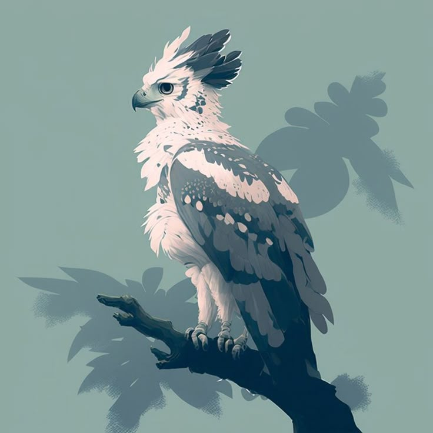

.jpg)
| Age | 28 |
| Deity | Benefactor |
| From | Camros |
| Luck | Permanent -1 |
| Status | Poor Atheist |
| Motivation | Chaos, Revenge, Impulsive thoughts |
| Occupation | Petty thief, murderer, mimic-purse creator |
| Relations | Best friend(dead), cultist ex-boyfie, Loving caring parents |
| Romance life | "Dead to me"-Azze |
Base Pokemon
| Name | Rapsody |
| Type | Nature |
| Species | Sky Raptor |
| Luck | Better than Azze |
Backstory but make it a trainwreck
He built this life dumb idea by dumb idea
Azze grew up dirt poor, with two loving caring parents who gave their all to help him improve his life and have a hopeful future, but he had never been a 'normal' child (Original I know.).
He grew bored of life, the monotonous drone of survival and all its recuring issues, and one day decided he would make life better, for him and his parents; thus he turned to petty crimes. Thievery, some small ransoms and the like. During this he got brought into a small group of like-minded thieves, group is a strong word it was two other people (His ex and best friend). Being a small time pain in the ass grew into being the local thorn in everyone's side, the groups projects grew bigger, their dreams wider, they thought themselves gods amongst mortal men. Until his best friend died (The boyfriend's younger sibling). And this is the start of the tragedy.
He'd never truly believed in a deity, or god, or some higher power that grants power and magic, who needs liars and their power if it gains you nothing? It was a bad heist that killed his bestfriend, it was a stroke of unluck that he cleanly murdered a man. It was his unbelief that made the blame fall on himself. You know what they say, grief will drive you insane with its weight if you have nowhere to put it.
Azze and his boyfriend continued their life of crime after that, their relationship grew in more ways than one and they became more connected than ever before, because it was the rich who put them in this situation, the good deities who made them powerless. That was enough for them, that had to be enough. So they started doing their own things too, Azze built connections and started killing for coin, his boyfriend founded a cult (He still regrets never asking why, maybe that would have saved them).
They began to fight, his boyfriend growing with illusions of grandeur and ideas for revenge against the world that had wronged him, he claimed that killing should be done for a noble reason, one preordained by the gods, by his god, by his hand -Azze was shocked that people believed his boyfriends bullshit.
Azze however believed that killing was no noble thing, that it should not be done to those who had never actually done any wrong(The only innocents in this world to him are children). And he explained this to his boyfriend, tried to reach him, to convince him that killing should not be made based on a moral philosophy, that faith in some powerful person (who got there through tricking the common folk into thinking they are god) was not a reason.
It all came to a head one day when Azze walked in on one of his boyfriends cult meetings, the sacrifice they had was a child. Azze watched his boyfriend ritually kill a child and did nothing to stop it, he will claim it was shock(He knows he was just looking for an excuse to start a fight). After the meeting had ended he confronted his boyfriend and the fight escalated, they had never had an issue with fighting it had always been about the why of the situation. They disagreed on the principle of why the other killed. His boyfriend wanted to convince him to join his cult, he claimed they could eventually rule the world together but he believed that there was no ruling the world, that there should be no supreme beings ruling over the common folk. His boyfriends arguments were weak to him, that "the strength and prestige will protect us" and "we can finally get revenge and let --- rest in peace" were just blatant excuses for the mans own cowardice.
They fought for hours, it escalated into screaming and throwing things. He hated it, he hated himself more for not just admitting he was worried about losing the only person he truly had left to things like the inquisition. He had lost contact with his parents years ago, he hoped they were well. Eventually, it ended with him storming out of their house and going to stay elsewhere for a couple of days. When he returned it was to his waiting boyfriend, the man simply said that if they couldn't see eye to eye then they shouldn't be together. He agreed, the words they shared hateful and full of unshared pain.
Two things happened the day his boyfriend left him, the first was that he vowed to himself he would prove his ex wrong and kill a god (Prove that the man's ideologies were bullshit and when he did he'd get the final one up-no he doesn't care, shut up that man is dead to him), the second was that he broke in a way he never thought was possible. This lead to him traipsing across the continent, avoiding the inquisition like a particularly deadly game of cat and mouse looking for ways to kill a god.
On this journey he received gifts from his mysterious benefactor, he never cared to ask who it was, he never cares to ask who anyone is, never cares to remember their faces, or names. They're all just idiot pawns who follow some made up god, why should he care? Life is about the chaos and hedonism of the moment, why be bothered with other people, and that is how he ended up in that city in Felas. Because a vacation to prison where the inquisition can't get on his ass is the best place to be, what's better than Hawaiin shirts and molotov cocktails on a disordered island?
Future Trauma:
(An idea guide for the All Mighty)
- If ex-boyfie lives, continue on the quest to kill/entrap a god and then rock up on his doorstep with it like guess what motherfucker and then beat the shit out of him while emotionally tearing into him to make him regret ever having left, and then walk out on him like he did to Azze.
- If boyfie dies it will shatter him so beautifully, and then he will hunt deities to put them in his Magic Eiy Balls and then he's going to destroy the inquisition and whatever diety ex-boyfie's cult worships.
- If parents get killed full reaction = "I didn't know they knew how to do that." and then hold an extravagant funeral for them and carry their skulls around.